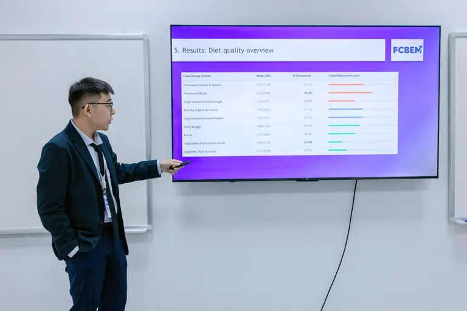

Project brief
Sample
n = 280 university students aged 18-25 from urban universities in Hanoi, Ho Chi Minh City, and Da Nang.
Model
Cross-sectional survey using DQQ/GDR diet quality, adapted nutrition knowledge items, IPAQ-SF activity, and multivariable regression.
Evidence
Physical activity, age, and knowledge were positive predictors of GDR diet quality; sex was not significant.
Boundary
Convenience sampling, self-report measures, and urban-only coverage limit causal and national generalization.
Reported sample, model, and limits
This page treats the FCBEM nutrition paper as an evidence summary, not a proof of intervention impact. The strongest claims are reported associations in an urban student sample; recommendations are framed as campus-planning hypotheses.
Geography wording follows the attached PDF, which names Hanoi, Ho Chi Minh City, and Da Nang as the urban university sampling locations.

Evidence Need
Campus nutrition planning needs local evidence on student diet quality, knowledge, and activity patterns, but the available data should be read as association evidence rather than causal intervention proof.
Research Gap
Global student-diet findings do not automatically transfer to urban Vietnamese campuses, where cost, convenience, and local food environments shape choices.
Method
Surveyed 280 valid respondents and modeled GDR diet quality with age, sex, nutrition knowledge, and IPAQ-SF physical activity as predictors.
Reported Signal
Physical activity, age, and nutrition knowledge were positively associated with diet quality; the cross-sectional design does not establish behavior change.
Reported Evidence
Model Readout
- Sample: n = 280 university students from urban universities in Hanoi, Ho Chi Minh City, and Da Nang.
- Reported predictors of higher GDR diet quality: PA MET-minutes (β = 0.0029, p < .001), age (β = 0.1284, p = .005), and nutrition knowledge (β = 0.1102, p = .014).
- Interpretation guardrail: Cross-sectional self-report data support association claims, not claims that knowledge or activity interventions caused better diets.
Physical Activity
β = 0.0029, p < .001. Reported as a positive association with GDR diet quality after controls.
Age
β = 0.1284, p = .005 within the 18-25 student sample. This is a cohort association, not a life-stage claim.
Nutrition Knowledge
β = 0.1102, p = .014. The paper frames knowledge as one contributor alongside activity and context.